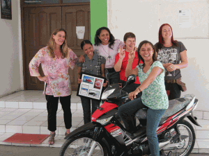
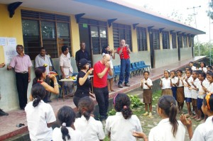
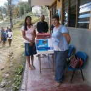
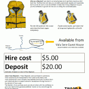
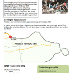
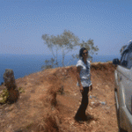
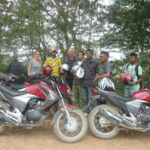

Have a holiday and make a real difference
We created Timor Adventures because we believe that the right kind of tourism will provide a sustainable source of income for East Timorese people. By coming on one of our tours you will be directly contributing to the local economy of the districts we travel through. Our drivers and tour guides are all Timorese; we stay in local accommodation, eat in local restaurants and encourage our travellers to support local artisans and community projects. We also work on a number of small scale tourism projects in between tours, some information about these projects is further down the page
Our community work 2012
{kind=link}
Working alongside NGO’s and friendship groups
Two important non-government organisations we specifically support through our tours are:
- The Alola Foundation a not for profit, non-governmental organisation operating in Timor Leste to improve the lives of women and children.
- ETWA, (East Timor Women Australia) and their work with CTKDS (Co-operative for tais, culture, development and sustainability) based in Lautem.
We also actively support the work of Friendship Groups, endeavouring to visit their counterparts in the districts and subdistricts, passing on updates and spending some money while we are there.
Our current work with Alola and women’s groups is to develop and stay in village based guest houses and homestays, aiming to establish a comprehensive network of village accommodation.
The Loi Hunu School
For the last three years our family and friends have donated musical instruments to the primary school in Loi Hunu, a village near Viqueque that we have developed a close relationship with. Many of the people who have come on our tours have also donated musical instruments and educational materials. Visiting the school is a very special highlight of our tours
{kind=link}
In 2012 we received a donation of 60 recorders for the Loi Hunu school from a NSW high school all thanks to both the school and Helen who had come on one of our tours in 2011. The recorders were couried by Helen to us in Melbourne, shipped to Timor by the Rotary club (Together with some life jackets…see below) and finally delivered to the school in Sepetmber 2012.
In 2012 the school also received a printer and copier thanks to the generous donations of the women on our 2012 Women’s tour
{kind=link}
Our personal family commitments.
In 2011 our niece Emma encouraged her work crew on the icebreaker the Aurora Australis to donate a motorbike, the Aurora Timor to Alola’s maternal child and health program in Baucau. It is a remarkable story and you can read more about it here
Our community work in 2012
In 2012 we were lucky enough to spend 6 months living in Timor. In between running tours we managed to work on several small scale tourism projects.
Life Jackets for hire: On the Eastern tip of Timor Leste is the most amazing little Island called Jaco Island. It takes a short boat ride with the local fisherman to get there.
We purchased 10 life jackets in Melbourne and transported them to Timor with the assistance of the local Rotary club. The life jackets were given to Valu Sere, a small co-operative ecolodge on the beach opposite the island for them to hire out and make some money.
Now even people who can’t swim can enjoy the boat ride to Jaco Island and the co-operative has another ongoing source of income
Telepunu Cave Trek: In early 2012 we had a person on the tour that was very keen to visit the caves where Xanana Gusmao hid during the Indonesian occupation. We discovered one cave, the Telepunu cave, which was on the Eastern tip, near a fishing village called Com. We tracked down a local guide, Edmundo, and he guided them to the cave
We developed this poster for Edmundo over a series of 4 visits to Com during our tours with our driver acting as an interpreter.
Supporting Haburus Moris in Bobonaro: In October we invited mana Evi to join us on tour. Mana Evi is part of Haburus Moris an NGO that is working to develop tourism initiatives in the Bobonaro area. Evi was able to find out first hand what Malae, (foriegners) expect as tourists and to visit other tourism providers around the country
We are looking forward to seeing how the Eco Lodge develops and staying there when it is completed
Motorcycle training in Emera district: Dave responded to a request to develop and provide motorcycle training to workers of an NGO in the Ermera district.
The training was divided into sessions for novice and experienced riders. Both sessions had a similar structure including some basic theory, a series of riding patterns in a field and then we found some difficult patches of roads to hone more specific skills.
The feedback from the sessions was very positive and Dave had a ball! Our thanks goes to Annie who coordinates the group for acting as interpreter. Dave can’t wait to do it again!
 Tourims fact sheets:The tourism ministry has opened a tourism advice service in the new Timor Plaza. We regularly meet with the staff there to discuss tourims ideas. One of the ideas that came out of these meetings was the need for tourism fact sheets about the various districts in Timor.
Tourims fact sheets:The tourism ministry has opened a tourism advice service in the new Timor Plaza. We regularly meet with the staff there to discuss tourims ideas. One of the ideas that came out of these meetings was the need for tourism fact sheets about the various districts in Timor.
We developed a template and a working example. We then produced a series of 10 fact sheets from the template, all using the same style, all having a unique colour and all blank. The staff in the tourism advice service have been working to complete them and the feedback from the staff has been wonderful.